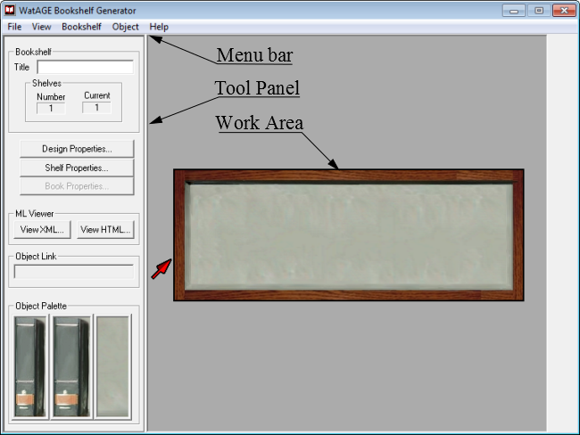

> Learning the Graphical User Interface (GUI) >
The opening screen
3.1. The opening screen
Bookshelf Editor 1.1 is opened to the main screen.
The main components of the main screen are:

The Bookshelf Editor Main Screen


Bookshelf Editor 1.1 is opened to the main screen.
The main components of the main screen are: